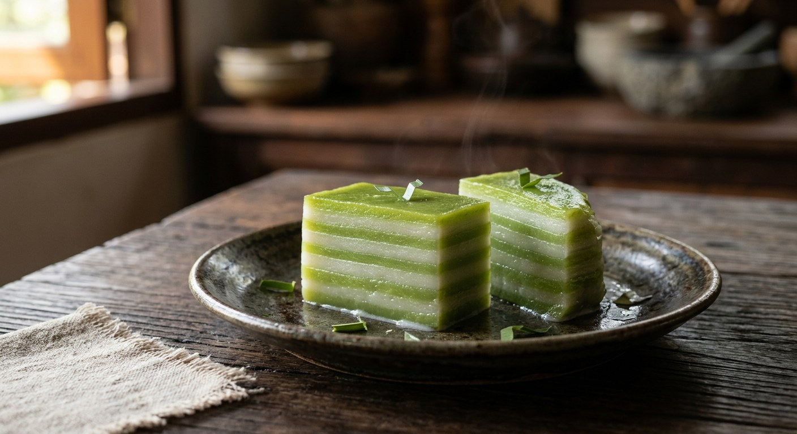

Tapioca starch, rice flour and arrowroot stirred into coconut milk, then steamed one thin layer at a time — pandan green over coconut white, again and again, until the cake stands nine layers tall. The sweet Thai kitchens make when they want progress.

The name is straightforward: ขนม (kanom) is a sweet, ชั้น (chan) is a layer. But the layers carry the meaning. The traditional cake must be poured to nine of them, because เก้า — the Thai word for nine — rings against ก้าว, to step forward. Wikipedia and SGE both record the custom: a kanom chan with nine layers is an omen of advancement, so it is the sweet of housewarmings, ordinations, weddings and offerings at the temple, where the hosts hope the good fortune rises with each stratum.
The structure is the recipe's real craft. There is no baking, no filling, no assembly — just batter, a steamer, and patience. Each thin layer must set completely before the next is poured, or the colours bleed into each other and the whole cake reads as a blur. The layers are the point: cut into diamonds, every piece shows all nine bands of green and white, which is why the cake is cut on the diagonal and served with the stripes facing up.
Thai Wikipedia's flour table is the whole science of the thing. Each flour earns its place: tapioca starch (แป้งมัน) makes the texture smooth, chewy and translucent; arrowroot (แป้งเท้ายายม่อม) keeps it glossy and firm; rice flour (แป้งข้าวเจ้า) makes it stand up straight; some recipes add a little mung bean flour (แป้งถั่วเขียว) so it holds its shape without turning gluey. Swap the proportions and you have a different cake — which is exactly what every Thai recipe does.
The colour scheme is pandan green and coconut white, with butterfly-pea blue (อัญชัน) as the traditional alternative. At Baan Thong Ek, Khun Oi's pandan version on Krua.co treats the layering as a discipline to be preserved — อนุรักษ์ความเป็นไทย, the phrase she uses, is the whole attitude: this is a sweet that remembers.
| Thai | English | Amount |
|---|---|---|
| แป้งมันสำปะหลัง | Tapioca starch | 200 g |
| แป้งข้าวเจ้า | Rice flour (regular, not glutinous) | 25 g |
| แป้งเท้ายายม่อม | Arrowroot flour | 25 g |
| กะทิ | Coconut milk | 750 g |
| น้ำตาลทราย | Caster sugar | 400 g |
| กลิ่นใบเตย | Pandan essence | 1 tsp |
| สีผสมอาหาร | Food colouring | as desired |
The great-grandmother's pot (SGE): 480 g tapioca starch, 30 g rice flour and 150 g arrowroot, with 900 g coconut cream, 100 g thin coconut milk, 100 g concentrated pandan juice, 100 g jasmine-flower water, 950 g sugar and a teaspoon of salt — the flours smoked with candle smoke overnight, the coconut cream rendered until it gives up its oil for greasing the mould, and the dough kneaded for a full half hour. The same cake, five generations deeper into the tradition.
The flour mix. Aroifin's home version leans hard on tapioca — 200 g of it against 25 g each of rice flour and arrowroot. SGE's classic gives arrowroot real weight: 150 g to 480 g tapioca and 30 g rice. Thai Wikipedia declines to referee: three or four flours, in whatever proportions suit the texture the cook wants — more tapioca for gloss and chew, more rice for firmness. The cake is recognisably the same; the bounce is different.
The sugar. Aroifin sweetens with 400 g to 750 g of coconut milk; SGE's batch uses 950 g of sugar to 900 g of coconut cream — roughly twice the sweetness by proportion. The old festive cake is a syrup cake; the home version is merely sweet. Taste the batter and choose your tradition.
The candle smoke. SGE's great-grandmother's recipe stands the mixed flours overnight in candle smoke (อบควันเทียน) before anything else — the old Thai technique that gives festive sweets their faint smokiness, the same one used for thong yip. Aroifin's modern recipe skips it entirely. None of the modern sources dispute the flavour it adds; they dispute whether a weekday cake needs it.
The mould's oil. SGE renders the coconut cream until it releases its clear oil — น้ำมันขี้โล้, the traditional release agent — and greases the tray with that. Aroifin, making flower-shaped cakes in small moulds, greases nothing and simply steams. The rendered-oil step survives wherever the cake is turned out whole; it disappears wherever the moulds are small enough to bend.
Pandan juice or essence. SGE blitzes pandan leaves with coconut cream and strains the juice; Aroifin stirs in a teaspoon of bottled pandan essence (กลิ่นใบเตย). Same colour, different depth — the juice is the fragrant, slightly grassy real thing, and every Thai cook who can get leaves uses them.
Nine layers, or any number. The tradition, in Wikipedia and Krua, is fixed: nine layers, because nine means progress. Aroifin's modern recipe shrugs — หยอดจนครบจำนวนชั้นตามต้องการ, pour until you have as many layers as you like. The meaning is the only casualty of the shortcut.
This recipe is translated from the following Thai-language sources. Where they disagree, we've said so.
1. Aroifin — "วิธีทำ ขนมชั้น ขนมไทยสีสวย เนื้อนุ่มเหนียว ทำง่าย หอมกะทิ" (the recipe used here; modern home version, flower moulds) — aroifin.com
2. SGE Thai — "แจก วิธีทำขนมชั้น สูตรย่าทวด หอม นุ่ม ขนมไทยที่กินยังไงก็ไม่เบื่อ" (the great-grandmother's classic: candle-smoked flour, rendered coconut oil, jasmine water) — sgethai.com
3. Krua.co — "แจกสูตรขนมโบราณพื้นบ้านยอดฮิต 'ขนมชั้นใบเตย'" Cook to Know, with Khun Oi of Baan Thong Ek (the pandan version; the craft, in her own kitchen) — krua.co
4. Thai Wikipedia — "ขนมชั้น" (the flour science, the nine-layer custom, the pandan and butterfly-pea colours) — th.wikipedia.org